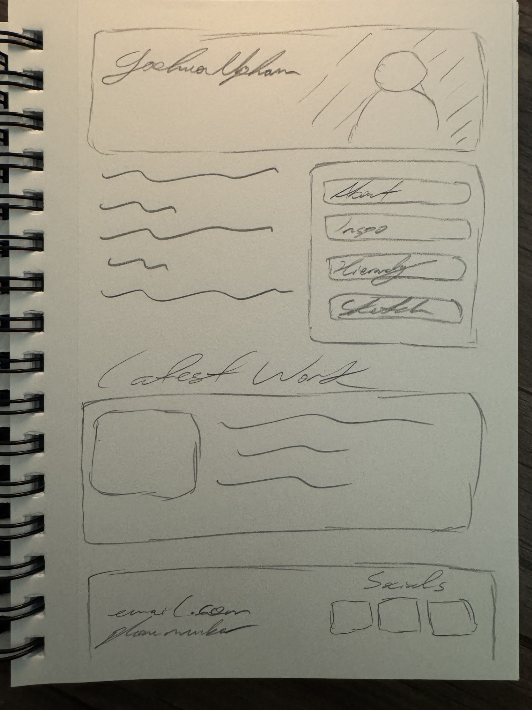

Interactive Sketchbook

Reflection Archive
September 15 2026
I was going pack* and forth between every folder and double-checking every name and link because the one for the sketchbook itself wasn't working. It was ten minutes later when I found that I had made the tiny typo of writing "href" as "herf."
The horrors persist.
P.S.
Roommate just noticed typo in the written reflection. (pack=back)*
The horrors persist.
P.P.S.
I just spent 30 minutes trying to get the links to connect from the other pages because I didn't realize that the ".." was literal in my notes, and just assumed it was where I put the file name.
When will the torment end?
September 22 2026
I actually really enjoyed making my navigation system into something much closer to the style I was looking for. I wanted to go for a bubble sort of look, with calm natural feeling colors. Having the navigation look the same through every aspect of the site made it feel much more fluid and connected. I'm liking how it's beginning to feel real. It's got me thinking about creating my own site for my portfolio in the future. A lot of the actual design of the navigation came from just messing with different commands that automatically came up when I typed words like border and color, and testing out what they did. I still want the rest of the site to feel a bit more put together, and am thinking about the navigation being more of a box, that sits on the side of the screen. I put the css for the nav in the root sheet as it pertains to all pages, but left the modifications for a single page, on that page's own css.
September 29 2026
I changed some of what my original wireframe had and didn’t add some of it as I still am unsure of how to accomplish it. The primary example of this would be trying to put the text next to the image, as I tried different versions of inline display codes, all to no avail. I altered the navigation, as I found a style that I thought to be cleaner and more appealing, which was largely influenced from the mid-century modern blog, as I really like that minimalist look and feel, and plan on incorporating more aspects in line with that premise henceforth. In terms of css and html choices, I decided to alter the look of portions of the text through class classifications so that hopefully they will be easier to alter across the site from now on. I did spend quite a while trying to fix the navigation for the css basics page, before I realized that the scroll bar on the side of the browser was what was causing the slight change in placement, and not an unseen modification within the code.
September 29 2026 - Part 2 GitHub Boogaloo
I found publishing the site to GitHub not too bad, so far, I’ve only run into the one issue with pageTwo from the first publishing. I have noticed that it can be quite slow to publish from the first push, which led to me believing that there was an error when implementing my code, that wasn’t coming up in Visual Studio Code. It turns out it was just slow, and after refreshing a few times, and re-pushing the code, the problem alleviated without any changes necessary to the code, and all my modifications showed up. I still am unsure how to modify the navigation on the box model page, but that is an error on my part, nothing to do with GitHub.